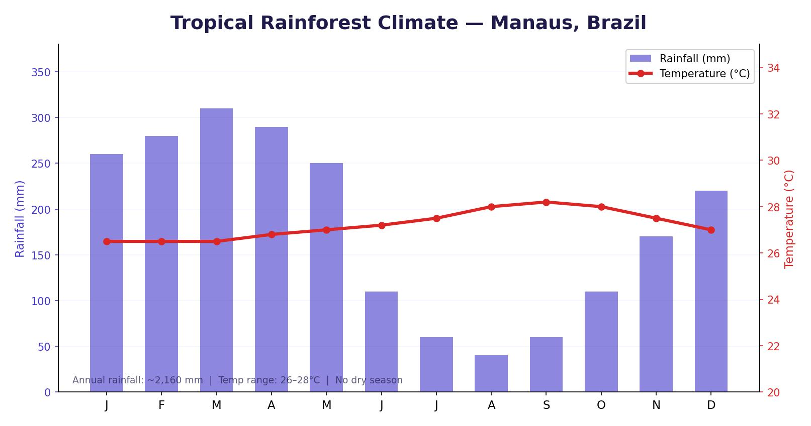

Distribution of Tropical Rainforests
Tropical rainforests are found in a belt around the equator, between the Tropics of Cancer and Capricorn (roughly 5°N to 5°S). They are located across South America (particularly Brazil), Central Africa, South-East Asia (including Indonesia) and parts of Australia.
Tropical rainforests cover only about 6% of the Earth’s land surface, yet they contain between 50% and 90% of all the world’s plant and animal species. This extraordinary biodiversity makes them one of the most important biomes on the planet.
Climate of the Tropical Rainforest
Because tropical rainforests sit on or near the equator, they have a distinctive equatorial climate:
- Temperature — consistently hot throughout the year, typically between 25°C and 30°C. There are no real seasons.
- Rainfall — extremely high, usually between 2,000 mm and 3,000 mm per year. Most afternoons experience a heavy downpour.
- Growing season — 12 months. The constant heat and moisture mean plants can grow all year round.
The combination of high temperatures, high rainfall and a 12-month growing season creates the conditions for the highest biodiversity of any biome on Earth. The TRF has more species of plants and animals than any other ecosystem.

Layered Structure of the Rainforest
The tropical rainforest has a distinctive layered structure as trees compete for sunlight. The amount of light reaching each layer decreases from top to bottom:
- Emergent layer (above 40 m) — the very tallest trees that poke above the main canopy to capture maximum sunlight and rainwater. Examples include mahogany trees. Birds and insects are common here.
- Canopy (around 30 m) — a continuous layer of treetops that blocks out most of the sunlight from below. It contains the greatest variety of plant species and is home to birds and monkeys.
- Under-canopy (10–20 m) — a darker layer with fewer trees, but many lianas (climbing vines) that hang from taller trees, reaching up towards the light.
- Shrub layer (5–10 m) — small trees and plants that wait patiently for a gap in the canopy (caused by a tree falling) to let in enough light to grow.
- Forest floor (0–5 m) — very little light reaches here (only about 2%). The ground is covered in fallen leaves, rotting branches and a network of shallow roots. Ferns and mosses are common.
Soil and Nutrient Cycling
Despite the lush vegetation, rainforest soil is surprisingly poor. The soil type is called latosol — a thin, infertile layer lacking in nutrients. This seems contradictory, but the rapid nutrient cycle explains it:
- The hot, moist conditions mean leaf litter decomposes very quickly — much faster than in temperate woodlands.
- Decomposed material creates a thin layer of humus, full of nutrients.
- These nutrients are rapidly reabsorbed by plant roots before they can build up in the soil.
- Heavy rainfall causes leaching — washing away any remaining nutrients before they become part of the soil.
If the vegetation is removed (through deforestation), the soil quickly becomes infertile. Without trees to absorb nutrients, rapid leaching strips the humus layer. Without roots to hold the soil together, soil erosion accelerates.
Plant Adaptations
Plants in the tropical rainforest have developed remarkable adaptations to survive the hot, wet conditions and compete for light:
- Drip tip leaves — many leaves are large and pointed with waxy surfaces. This allows water to run off quickly, preventing damage to the leaves and stopping bacteria and fungi from growing on them.
- Buttress roots — huge, wide roots at the base of emergent trees. They are needed to support trees that grow incredibly tall (over 50 m) in their competition for sunlight. The roots spread outward rather than growing deep, because nutrients are near the surface.
- Smooth bark — unlike UK trees, which have thick bark to prevent moisture loss, rainforest trees have thin, smooth bark. This makes it harder for epiphytes (plants like ferns and orchids that grow on tree surfaces) to take hold and steal light and nutrients.
- Lianas — woody climbing vines that use tall trees as support to reach sunlight in the canopy.
Animals have also adapted to the conditions in the TRF. Specific animals live in different layers of the forest:
- Toucan (canopy) — has a long, lightweight beak designed to reach, pick and break apart tropical fruit. Four toes on each foot (two facing forward, two back) give excellent grip on branches. Excellent eyesight helps spot predators from a distance.
- Green anaconda (under-canopy) — green scales and mottled patterns provide effective camouflage in the dense vegetation. Eyes and nostrils sit on top of its head, allowing it to lie underwater while ambushing prey. An extremely wide jaw allows it to swallow large prey.
- Leaf-cutter ants (forest floor) — live in colonies of over 1 million. They have razor-sharp jaws that vibrate up to a thousand times per second to cut leaves. They carry leaf pieces back to their nests where the leaves decompose and grow fungus, which the ants eat.
In the exam, you may be asked to explain how either plants or animals have adapted to the conditions in the TRF. Always link the adaptation to the specific condition it helps the organism survive — for example, drip tip leaves are an adaptation to high rainfall, while buttress roots are an adaptation to competition for light (trees grow very tall and need support).